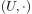
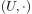
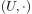
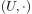
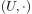

Sei ein Monoid und . Dann ist ein Untermonoid, falls  ein Untermonoid ist.
Author: Anton Zakrewski
Email: anton.zakrewski@campus.lmu.de
 ein Monoid und
ein Monoid und  .
Dann ist
.
Dann ist  ein Untermonoid, falls  ein Untermonoid ist.
ein Monoid und .
Dann ist ein Untermonoid, falls  ein Untermonoid ist.
ein Untermonoid, falls  ein Untermonoid ist.
ein Monoid und .
Dann ist ein Untermonoid, falls  ein Untermonoid ist.